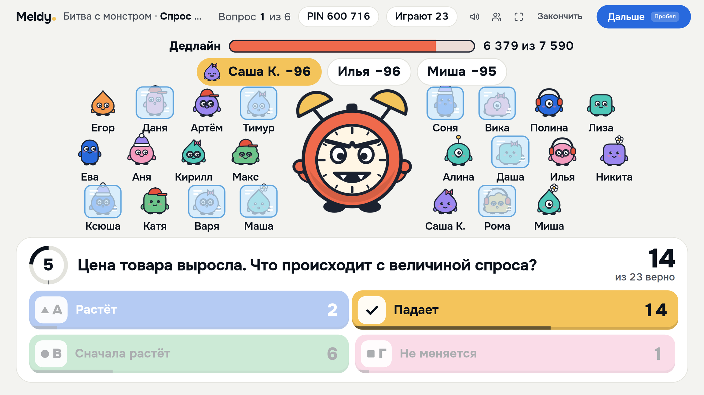
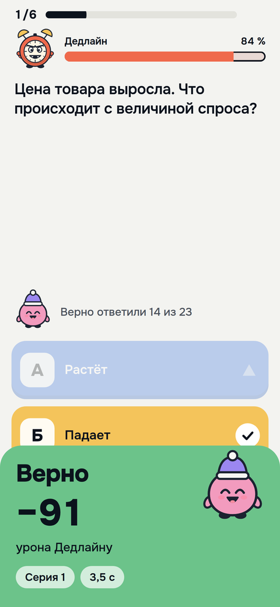

Представление блоков проекта
Контрольную пишут по ссылке
или играют в неё всей группой на паре
или играют в неё всей группой на паре

Пройдите этот тест
из 5 вопросов без аккаунта
из 5 вопросов без аккаунта
ludosiel-studyforge.hf.space
/k/kb0dxmwb21fb
/k/kb0dxmwb21fb
1
Вход по PIN или из Telegram
2
Верный ответ бьёт по монстру
3
Каждый видит место и ошибки


3
Четвёртая часть это контрольные. Пройти тест можно двумя способами. Первый по ссылке. Наведите камеру на код. Откроется настоящий тест «Эластичность спроса за минуту». Входить не нужно. Пять вопросов, около минуты. После «Завершить» вы сразу увидите балл, ошибки и пояснения. А автор увидит вашу попытку на своей странице.
Второй способ это игра на паре. Преподаватель нажимает «Провести игру», и на проекторе появляется PIN. Студенты входят с телефона или кнопкой «Играть» в беседе группы в Telegram. Вся группа сражается с монстром «Дедлайн». Верный ответ бьёт монстра, и чем быстрее, тем сильнее. Ошибка замораживает до следующего верного ответа. После каждого вопроса видно место в классе. В конце пьедестал и разбор ошибок у каждого на телефоне.
Если спросят: игру проверили на настоящей базе 21 октября. Играли 24 игрока. От хода учителя до экрана телефона в среднем полсекунды. Медиана 0,47–0,51 с по трём переходам. На телефоне с замедленным в четыре раза процессором 60 кадров в секунду. Вопросы проверяются без ИИ, поэтому игра не тратит лимит. Тест открыт всем по ссылке без аккаунта. Время не ограничено, попыток сколько угодно.
Адрес теста: ludosiel-studyforge.hf.space/k/kb0dxmwb21fb